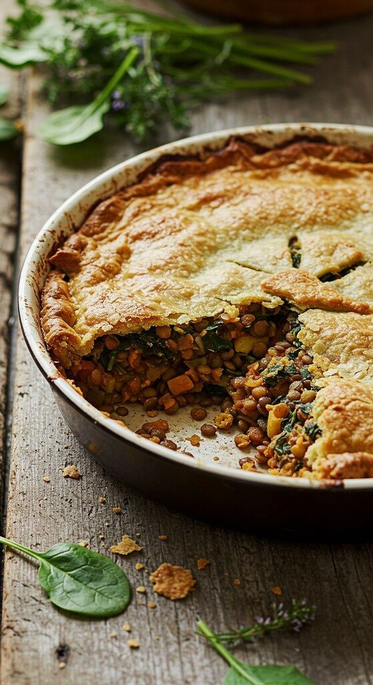

Holiday Make-Ahead Mashed Potatoes

Photo: Piersey (CC BY 2.0)
Make-ahead mashed Yukon Gold potatoes whipped with rosemary-infused cream, butter, cream cheese, roasted garlic, and chicken broth, then refrigerated or frozen and reheated before serving.
Directions
- Place rosemary and cream in pan. Simmer on low heat.
- Put potatoes in pot. Cover with cold water. Add salt. Bring to boil, then simmer until potatoes are fork tender 35-40 minutes. Remove from heat; drain.
- Put potatoes back in po; return to heat to low. Remove rosemary from cream; pour liquid over potatoes. Add butter, cream cheese, garlic, broth and salt and pepper. Wjhip potatoes to desired consistency. Use additional milk if desired. Garnish
- Pour potatoes into buttered 9 by 13 pan. Cover and refrigerate fo up to 4 days. Freeze fo 2 weeks. To heat, remove from efrigerator. Remove lid. Dot with butter. Cover potatoes with foil. Waarm in 350 degree oven for 30 minutes. Uncover. Bake 5-10 minutes. Stir to fluff before serving.
- Place the rosemary and cream in a pan. Simmer on low heat.
- Put the potatoes in a pot and cover with cold water. Add the salt. Bring to a boil, then simmer until the potatoes are fork tender, 35-40 minutes. Remove from heat and drain.
- Put the potatoes back in the pot and return to low heat. Remove the rosemary from the cream, then pour the liquid over the potatoes. Add the butter, cream cheese, garlic, broth, and salt and pepper. Whip the potatoes to desired consistency, using additional milk if desired. Garnish.
- Pour the potatoes into a buttered 9 by 13 pan. Cover and refrigerate for up to 4 days, or freeze for 2 weeks.
- To heat: remove from the refrigerator and remove the lid. Dot with butter and cover the potatoes with foil. Warm in a 350 degree oven for 30 minutes. Uncover and bake 5-10 minutes. Stir to fluff before serving.
Goes well with
https://baron-3dl.github.io/normans-kitchen/recipe/holiday-make-ahead-mashed-potatoes.html